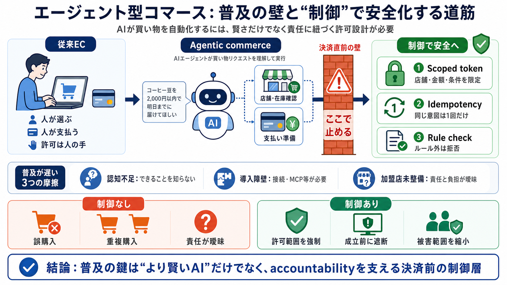

Mastercard Agent Pay vs Visa Trusted Agent 2026: Compared
# Outlook for 2026 Both networks have telegraphed feature parity by mid-2026. Mastercard plans to expose AP2 Intent and…

普及の壁を分解
AIエージェントが買い物を自動化する「agentic commerce」は有望ですが、責任と制御が未整備だと普及が止まります。
勝手に決済は危険
AIが誤購入・重複購入・不正利用までできてしまうと、被害と責任の所在が曖昧になります。
決済の前に人間の資格
人間が責任を負う前提では、エージェントは単独で決済手段を持ちにくく、購入のたびに人間の資格情報が関与します。
従来EC vs エージェント型
従来は人が商品・金額を選び決済しますが、エージェント型はAIが指示を解釈し、外部連携で実行します。
普及が遅い理由（技術/人/加盟店）
普及は「賢さ」だけでは進まず、認知・導入障壁・加盟店側の責任設計が絡みます。
技術前提が普及を左右
本文では、エージェントが外部連携する文脈としてMCPサーバーを挙げ、重複を抑える仕組みとしてidempotencyを前提にしています。
誤購入を“成立前に”止める
Authoryzeの例では、許可の範囲を狭める仕組みと、重複や逸脱を弾くチェックで安全化します。
賢さより“accountability”
モデルが賢くなっても、説明責任（accountability）が人間に残る限り、誤作動や悪用へのガードは別問題です。
設計の狙い：被害の範囲を縮める
誤購入・重複購入・暴走・詐欺といったリスクは存在しつつ、制御で発生確率と被害範囲を下げる発想が示されています。
普及の加速条件
エージェント型コマースの成長は、より賢いAIだけでなく、説明責任に紐づく制御が整うほど加速します。
残る確認ポイント（検証不足）
本文は制御の方向性を示す一方で、障害時の挙動、誤検知率、監査ログ粒度、ユーザー承認体験などの具体が読み取れません。
まとめ：安全は“制御”で作る
普及のボトルネックはモデルの賢さよりも、決済の許可範囲・冪等性・ルール逸脱への拒否などの制御設計にあります。
未来が来るまで待つのではなく、accountabilityに紐づく“決済直前の壁”を実装していくことが前進になります。
# Outlook for 2026 Both networks have telegraphed feature parity by mid-2026. Mastercard plans to expose AP2 Intent and…
Visa Intelligent Commerce Capabilities - Overview of VIC features and capabilities Visa Developer Center - Main portal …
Visa’s Trusted Agent Protocol and Mastercard’s Agent Pay present three key solutions for merchants to manage agentic com…
Merchants often operate with limited technical resources and must balance competing priorities. Mastercard’s Agent Pay A…
volume leak to “agent‑ready” competitors. Here’s a preview: - Visa Intelligent Commerce – tokenisation + authentication …